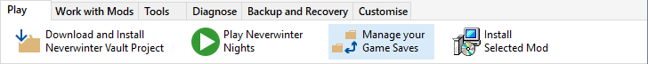
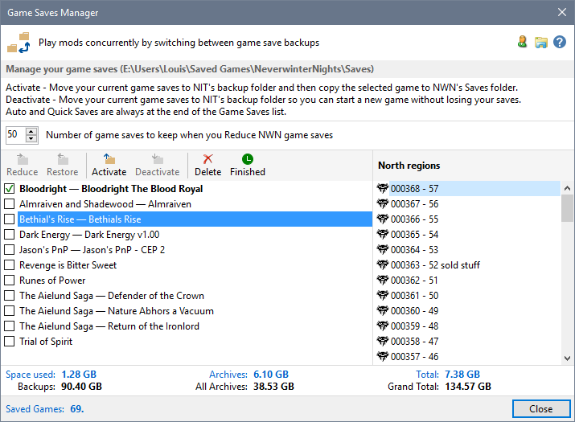

The Game Saves Manager allows you to play a number of Mods concurrently by moving your current game saves to the Installer Tool's Backup folder and then restoring a previous Backup of the Mod you want to play. It also lets you browse the contents of Neverwinter Nights and Installer Tool game save folders using Windows File Explorer, prune the number of save folders in your Neverwinter Nights game save directory as well as restore saves that you removed.

Click Game Saves Manager from the Tools menu to display the manager window, which shows the game you are currently playing and a list of available game backups.

Disk usage and the number of saved games are shown in the information area. Blue text applies to the selected game, while black text applies to all game saves.
You can hover the mouse over the location heading (North Regions in the image above) to display NWN's save image for the selected save.
Quick Saves and Auto Saves are always excluded from the Saved Games count.
The names shown in the list of Game Saves comprises NIT's Mod Name and NWN's .sav file name (Mod Name — Save Name). If the Save and Mod names are the same, then only NWN's .sav file name is shown (Save Name).
Automatic backup of Game Saves
Display Character Summary Information
Open a game save folder with Windows File Explorer
Restore Game Saves from Backup
Reduce the number of NWN Game Saves
Restoring deleted saves from the Recycle Bin